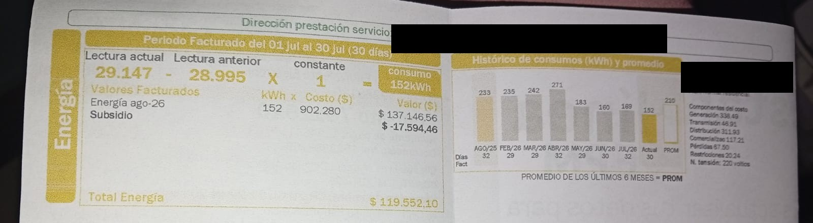
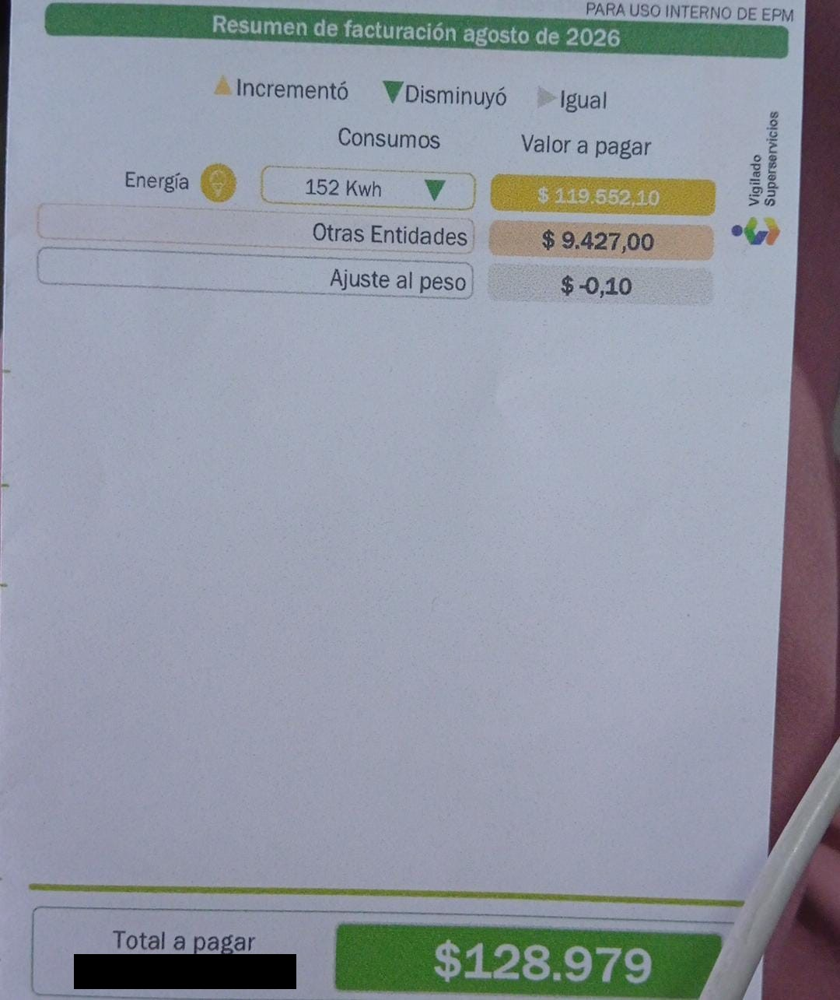

Mi recibo
Mi apartaestudio comparte el contador con la casa vecina, donde vive una persona sola. Por eso el recibo mide el consumo de los dos hogares juntos. Tapé los datos personales y los números de contrato, producto y medidor.


Historial de consumo
| Mes | Consumo (kWh) | Días facturados | Valor de la energía (COP) |
|---|---|---|---|
| Agosto 2025 | 233 | 32 | ≈ 183.261 (estimado) |
| Febrero 2026 | 235 | 29 | ≈ 184.834 (estimado) |
| Marzo 2026 | 242 | 29 | ≈ 190.340 (estimado) |
| Abril 2026 | 271 | 32 | ≈ 213.149 (estimado) |
| Mayo 2026 | 183 | 29 | ≈ 143.934 (estimado) |
| Junio 2026 | 160 | 30 | ≈ 125.844 (estimado) |
| Julio 2026 | 169 | 32 | ≈ 132.923 (estimado) |
| Agosto 2026 (actual) | 152 | 30 | 119.552 (real) |
El recibo solo trae el valor de agosto. Los demás valores son una
estimación: kWh × 786,53 COP, que es lo que costó cada kWh en agosto
después del subsidio (119.552,10 ÷ 152). Con otras entidades y el ajuste, el total
pagado en agosto fue $128.979.
No incluyo el recibo de octubre porque todavía no ha llegado, ni el de septiembre
porque no lo encontré. Por eso la tabla termina en el recibo de agosto.
Proyección de mis equipos frente a la factura
Recibo de agosto (consumo de julio)
152 kWh
Consumo de los dos hogares del 1 al 30 de julio (30 días).
Diferencia
81 kWh
Mis 4 equipos explican el 47 % de la factura.
¿Por qué hay 81 kWh de diferencia?
- Equipos sin ficha: la ducha eléctrica, el computador y otros aparatos no tienen etiqueta con la potencia, por eso no entraron en mi cálculo. La ducha suele ser de los equipos que más gasta.
- La casa vecina: el contador es compartido, así que parte de los 152 kWh es de ella.
- Estimación de horas: en la sanduchera y la arrocera usé promedios por día, y la nevera y la lavadora las calculé con los kWh de su etiqueta, que son un valor de referencia y no una medición en mi casa.
Recomendaciones de ahorro para mi familia
- Cuidar la nevera: es mi equipo medido que más gasta (39,9 kWh al mes, el 56 % de los 4 equipos). No abrirla sin necesidad, no meter comida caliente y dejarla separada de la pared.
- Lavar solo con la lavadora llena: cada ciclo gasta unos 0,86 kWh y lavo 2 cargas cada 2 días, unos 26 kWh al mes, el segundo equipo que más gasta. La lavadora aguanta 15 kg, así que puedo juntar la ropa y lavar menos veces.
- Recortar el tiempo de baño: la ducha eléctrica no tiene ficha, pero gasta mucha energía mientras está encendida. Bañarme en menos tiempo baja el consumo.
- Desconectar el computador cuando no lo uso: tampoco tiene ficha, pero conectado sigue gastando energía aunque esté en reposo.
- No preocuparme por la arrocera ni la sanduchera: juntas gastan unos 5 kWh al mes. Basta con desconectarlas al terminar.
- Hablar con mi vecina para que ella también ahorre: como el recibo es de los dos hogares, el ahorro de una sola no basta para bajar los 152 kWh. Podemos anotar la lectura del contador cada semana en la página Registrar un equipo para ver cómo cambia.